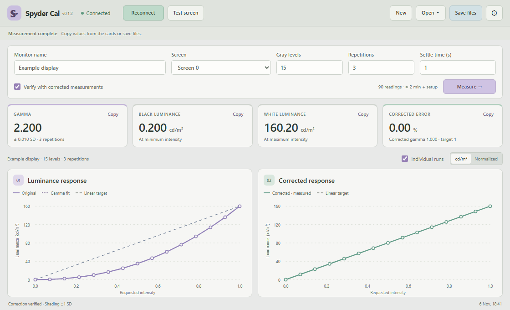

DISPLAY CALIBRATION FOR PSYCHOPY
Know your display.
Measure luminance with your SpyderX, verify the corrected response,
and save the curves and gamma values for your experiments.
Download for Windows64-bit · ZIP
Extract once, then run Spyder Cal.exe.
Portable .exe also available.
Download for Linuxx86_64 · AppImage
Make executable, then open.
Built on Ubuntu 22.04.
Python and PsychoPy included. SpyderX required. Installation & setup

Repeat measurements, copy values into PsychoPy, and export JSON, CSV, PNG, and SVG.